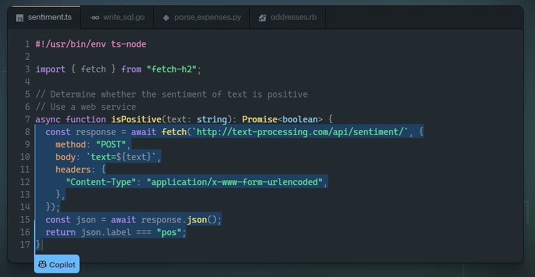

Если вам близки вышеперечисленные вопросы, просим устроиться поудобнее, а мы попробуем подробно ответить на них в этой инструкции. Мы понимаем всю важность, ведь научившись создавать современные и функциональные сайты, вы сможете построить интернет-представительство не только для себя или своей компании, но и предложить подобные услуги другим заинтересованным людям. На сегодняшний день это один из наиболее перспективных и стабильных видов интернет-заработка.
Технические аспекты создания собственного сайта во многом зависят от правильного выбора необходимых инструментов. Прежде всего, стоит понимать, что на сегодняшний день существует три основных способа самостоятельного создания сайта:
Давайте рассмотрим каждый из этих способов более подробно. Начнем с того, который, на наш взгляд лучше других подходит для новичков.
Мы убеждены, что, если у вас ограничено время или желание разбираться, то оптимальным способом будет создание сайта в конструкторе. Мы выбрали самые эффективные и простые в использовании, что для создания сайта не потребуется каких-либо знаний в области верстки, программирования и веб-дизайна.
Итак, конструктор сайта - это специализированный онлайн-сервис, включающий в себя готовые варианты графического оформления для создаваемых сайтов, а также имеющий удобный и интуитивно понятный пользовательский интерфейс. В идеале современный конструктор сайтов должен позволить любому человеку создать свой собственный интернет-ресурс без необходимости получения знаний в области веб-программирования и дизайна.
Кроме того, специально для читателей нашего сайта мы составили рейтинг лучших конструкторов сайтов. Обязательно обратите на него внимание, чтобы проанализировать все возможные варианты!
Специально для тех, кто хочет научиться самостоятельно писать исходный код создаваемого сайта, мы подготовили пошаговую инструкцию по созданию простого сайта на HTML. Поехали!
В качестве первого примера мы создадим простой HTML-сайт, который будет состоять всего из одной страницы. HTML (HyperText Markup Language — язык разметки гипертекстов) – универсальный язык, предназначенный для описания веб-страниц. Его задача заключается в том, чтобы указать браузеру, что и как нужно отображать при загрузке страницы в браузере пользователя. Каждый из его тегов описывает фрагмент страницы.
Обратите внимание, что по умолчанию любой веб-сервер пытается выдать браузеру именно страницу с названием index.html. Поэтому в 99% случаев исходный код главной страницы сайта сохраняется в файле под таким названием и это считается хорошим тоном.
Полную версию этого простейшего HTML-сайта вы можете скачать в виде архива (10,8Mb). После распаковки архива запускаем html/index.html.
скачать файл HTMLСамостоятельное создание сайта с нуля состоит из трех основных этапов:
Источник инфомации: Статья